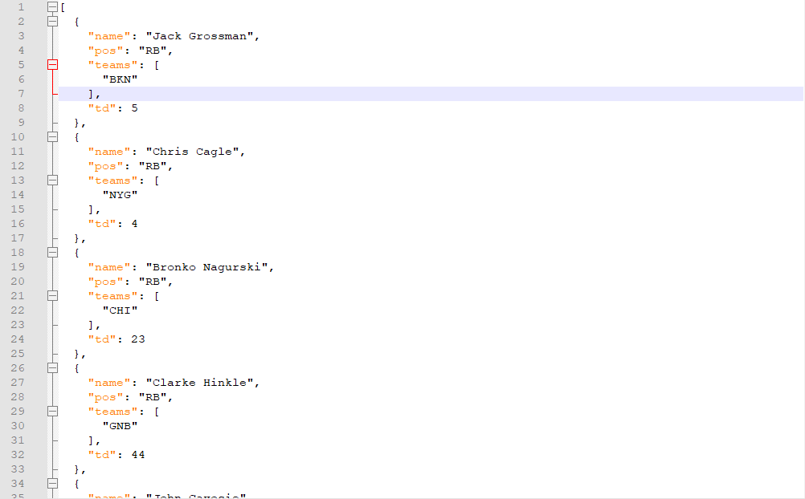
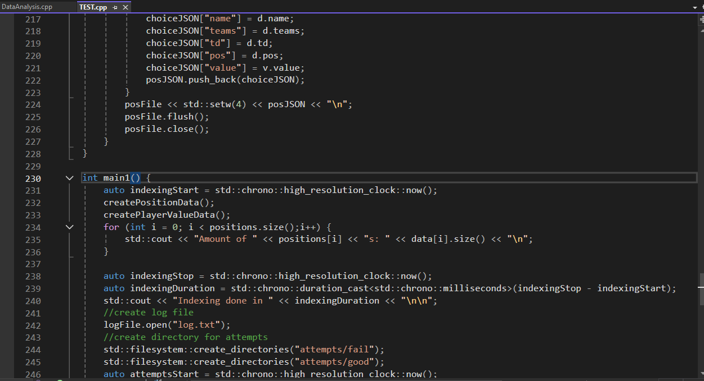
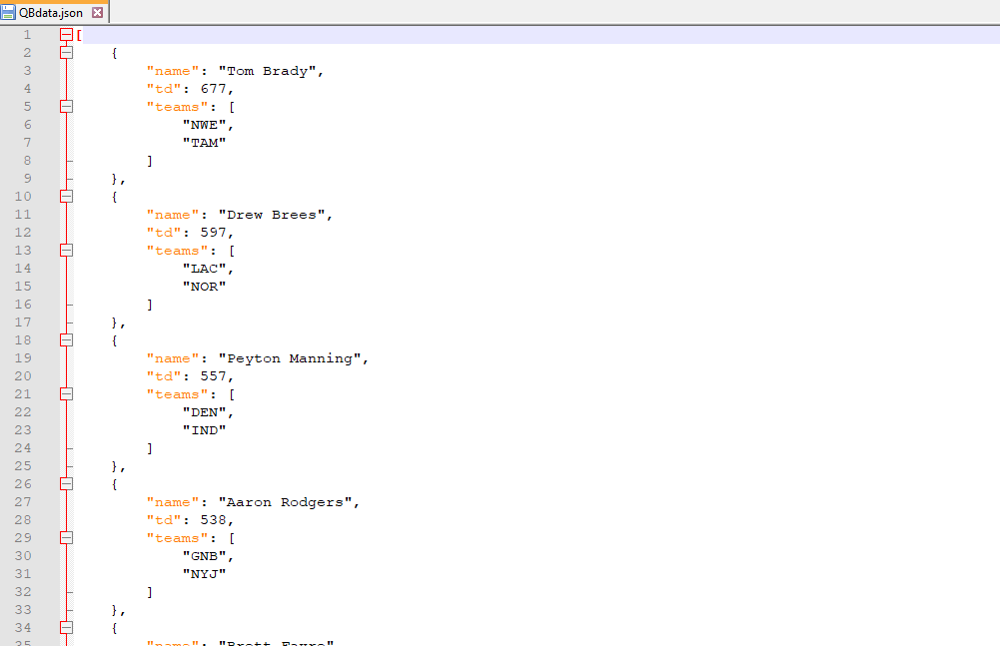
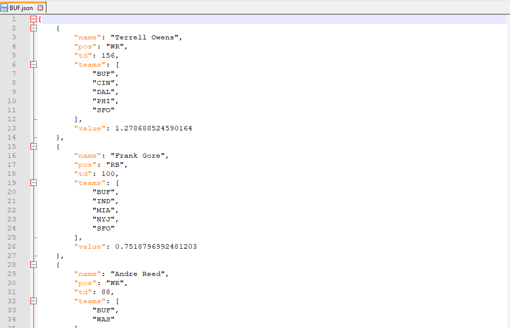
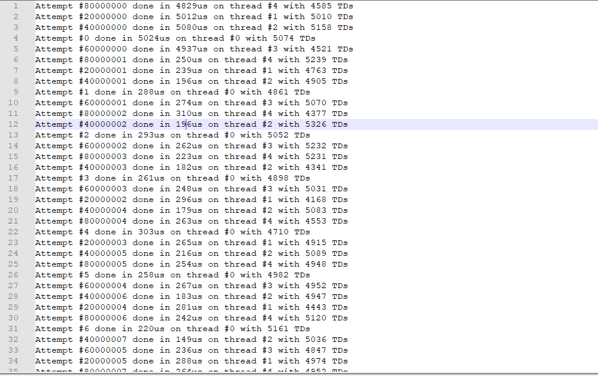
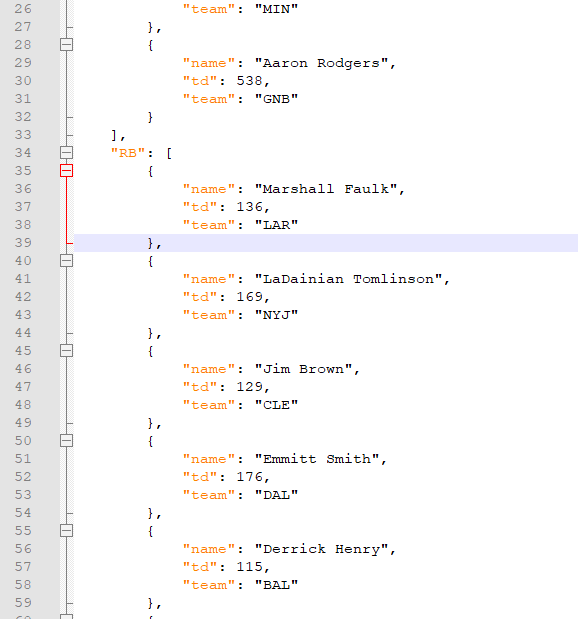
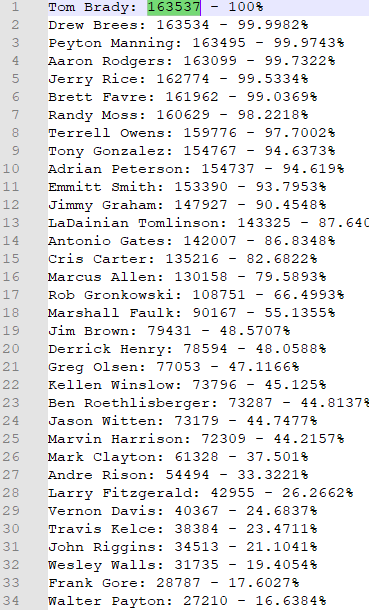
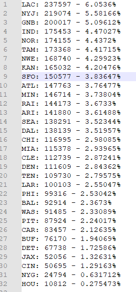
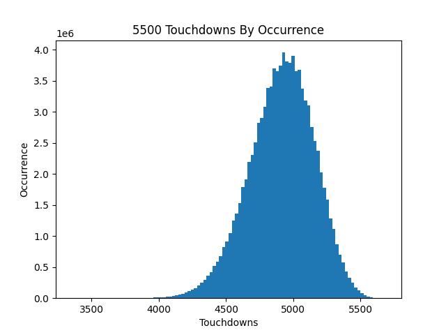

TL;DR
Yes, it is possible.
I simulated 5500 TDs 100,000,000 times
The chance of success is $\frac{163537}{100,000,000} = .1635 \%$
At this rate there should be a succsessful attempt around attempt 610
What is 5500 TDs?
5500 TDs is an NFL related TikTok challenge
Primarily, it is done by SportsForDorks, where he has been trying to get for over 300 days
There is a TikTok filter which chooses a random team
The goal is to select 6 QBs, 6 RBs, 6 WRs, and 6 TEs that have played for that team
Adding up all the career touchdowns of the players selected has to be equal to or greater than 5500 TDs
By touchdown, it means all touchdowns so passing TDs, rushing TD, receiving TDs, return TDs, fumble return TDs, etc..
Note: it doesn't matter the amount of touchdowns the player got for the team selected, it only matters if they were on the team
If you would like to try, you can go to 5500 TDs Challenge
Getting Data
For 5500 TDs we need to know 4 things, player, position, touchdowns, and all the teams they played on
To get the data I used Pro Football Refernce
My first idea was to use their Touchdowns Career Leaders, but this came with a lot of issues
First was that they didn't include passing TDs, next is that position data isn't there, and finally it doesn't list all the teams they played for
My next idea was to use their Player Scoring and Passing
This was much better because it is easy to loop through the years because it's just part of the url
Next I used a custom Java built webscraper to go through these links and add all the touchdowns from both to make a final JSON file
The only columns that mattered were Player, Tm, Pos, AllTD, and TD (on passing)
This initially created a JSON file that was too big, so I filtered the scraper to only allow the positions of QB, RB, WR, and TE because that is all we need
The next thing to do was to fix the JSON file because some of entries were outdated
Some team got renamed so I had to fix those manually, ex. San Diego Chargers became the LA Chargers, Houston Oilers became the Tennesse Titans
Some indivual players were also wrong because they had the same name and position
There were also some indivual players like Johhnny Unitas who played for the Baltimore Colts (which later became the Indianapolis Colts), but was listed under the Baltimore Ravens
Fixing all these finally gave a valid JSON Data File
Processing Data
From the beginning, I knew I wanted to use C++ because of it's speed, especially with the amount of attempts I wanted to do
I initially only wanted to do 10,000 attempts, but that only took a few seconds, so I scaled it up to 100,000,000 attempts, which in total took around 2.5 hours
If you would like the source code, https://github.com/IStrikeboomI/istrikeboomi.github.io/tree/main/notes/other/5500%20tds/assets/code
To run it, use the main in TEST.cpp and make sure the data.json is in the same directory
To process the JSON file, I used nlohmann's JSON library
The first thing the code does is to make 4 JSON files based on the 4 positions that have the player's sorted by TD from highest to lowest
These JSON files aren't needed, but it is good to have
The next thing is to create 32 JSON files for the 32 teams by sorted player's value that have played for the team
The way value is calculated is the proportion that the TDs are in respect to the 6th best at their position
I chose 6th best because we have to choose 6 of all postions
For the algoritihm it uses the same value system and chooses the highest avaible
There probably is a better algorithim that takes into account the teams, but I found this to be good enough
Simulations
I used the same data processing code to do the simulations
The simulation process was simple
Generate random team, and select the highest value player for that team that is avaible
Repeat that for 24 times and that's one attempt
After the attempt was done, we saved the result to the log, and if it was succsessful, it saved the attempt JSON
 Making It Faster
Using the method above, it took around a few milliseconds for an attempt
Now while this is fast, it wasn't fast enough for me
The biggest speed benefit is to change the compile type from Debug to Release, this made it nearly x50 faster
The next thing I did was to use multi-threadhing to split the work where each thread did its own attempt
Final Results
Using 5 threads on an Intel I5-8400, it took 10,000s, which is around 2.5 hours, to do 100,000,000 attempts
Out of the 100 million attempts, only 163,537 were succsessful
The averge TDs for an attempt was 4911.79 TDs
The best attempt was 5687 TDs
Analysis
Using the DataAnalysis.cpp file, I found the frequency each player and team were selected
What it showed how many succsessful attempts had a player chosen
Before I announce it, I want you to think which players are mandatory for a succsessful attempt
Something that surprised me was that it was only 1 mandatory player, the GOAT, Tom Brady
If you had thought Drew Brees was mandatory, there was some succsessful attempts where he wasn't taken, like Attempt #4465511
Aside from that there were some players that showed up in most attempts, which naturally are the leaders of TDs at their postions
The next thing the data analysis did was to get the team frequency
My initial thought was that the Chargers would be the best team to get because they have 4 players with a lot of TDs (Drew Brees, Antonio Gates, Phillip Rivers, and LaDainian Tomlinson)
My assumption was confirmed because it was the most common team chosen, the least common team is the Houston Texans, probably because of how new the team is
Here is also a histogram I made using Matplotlib of the TDs over all attempts
Final Thoughts
5500 TDs is possible, but it needs perserverance
It also needs some elite ball knowledge of the various teams that the best players played for
If you would like to do your own simulations and data processing, download the Source Code along with the JSON Library
Make sure to put data.json in the directory so the code can find it
Use the main in TEST.cpp to run simulations and DataAnalysis.cpp to do the data analysis